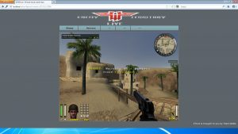
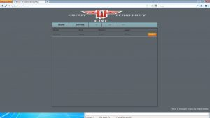
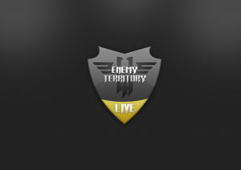

Overview
ETLive was a project that roughly started in 2011 with the goal of creating a browser-embedded version of Enemy Territory — essentially a QuakeLive clone for the ET community.
Inspiration: What QuakeLive Got Right
We thought QuakeLive did an amazing job on several components:
- 🚀 Easy onboarding — one simple setup for players
- 🌐 Player/clan/community website — centralized community hub
- 🔍 Simple server browser — find games instantly
- 📥 Automatic content download — no manual file hunting
- 💬 Friends and chat system — simple but effective
- 📊 Statistics, achievements, and rankings — progression systems
The Problem
Back then, the ET community was (and still is) divided over multiple ET versions and mods, and was suffering from ghost servers (redirect and "full bot" servers). New players wouldn't know what to download or which server to join.
A new centralized community combined with official servers would solve many of these issues — and thus ETLive was born.
Phase 1: NPAPI Plugin (Prototype)
We quickly had a working prototype with:
- One static HTML page
- A FireBreath (NPAPI) plugin — responsible for rendering the game inside an HTML canvas and forwarding browser input to the game
- A login system — starting with CakePHP, later ASP.NET, and finally switching to Python with Django
Phase 2: Browser Plugin Deprecation
During development, Google and Firefox announced they would stop supporting NPAPI plugins. We were unsure how long this would take, so we continued developing, hoping one browser would still support it as an exception.
Eventually, it was clear NPAPI would be gone forever — we had to change tactics.
Phase 3: Launcher Approach
By then, we were using the amazing ETLegacy project — an open-source, optimized version of Enemy Territory.
One of our team members, Toni, suggested we could modify the engine to support a custom protocol (e.g., etlive://some-ip). This way we could start the game from the browser and become more like a launcher — similar to Battle.net.
The launcher worked, and we even had communication between the servers and the back-end (which ran inside Docker containers, thanks to team member Marcus).



The End
Despite our progress, we decided to kill the project after 4 years due to:
- Lack of proper project management
- Too many technology switches
- Lack of time
- A non-coherent team
There was simply not enough progress or inertia to continue.
Lessons Learned
Despite the outcome, the project taught us a tremendous amount about:
- Project (mis-)management
- Django web framework
- EmberJS frontend framework
- Docker containerization
- The ET engine internals
A longer blog post containing the full post-mortem of ETLive is still pending.